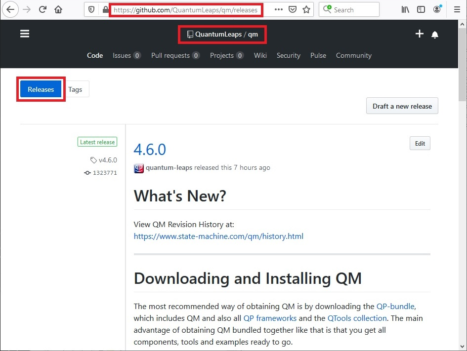
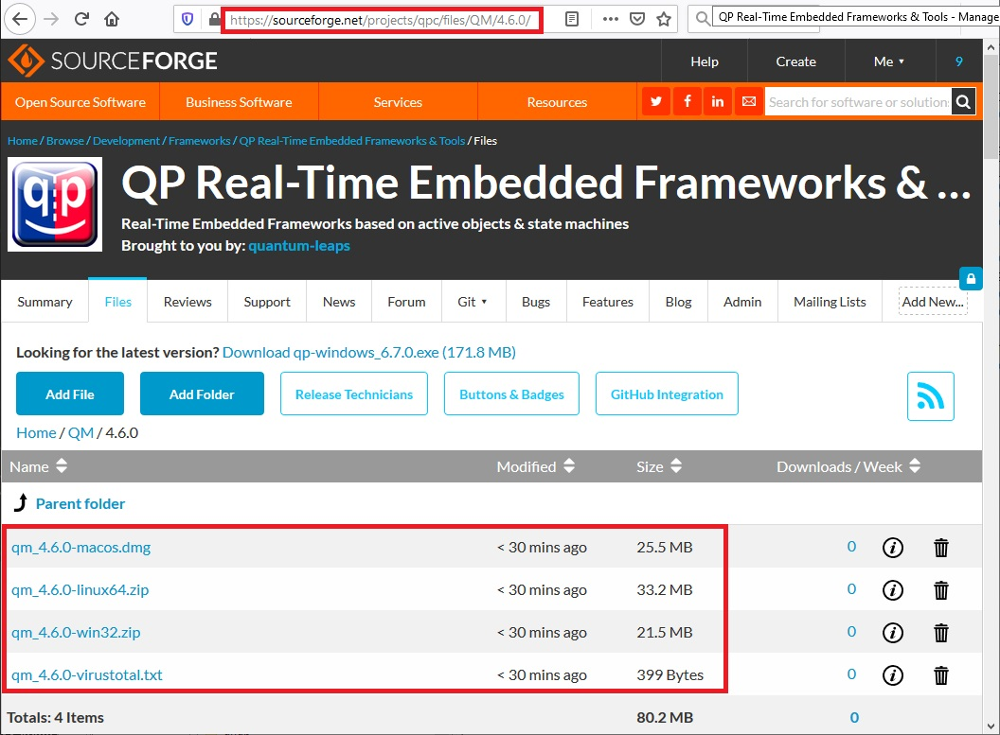
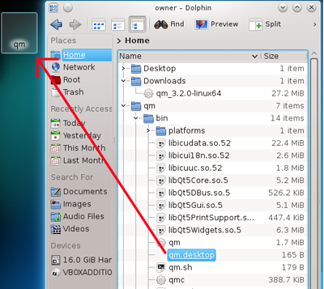
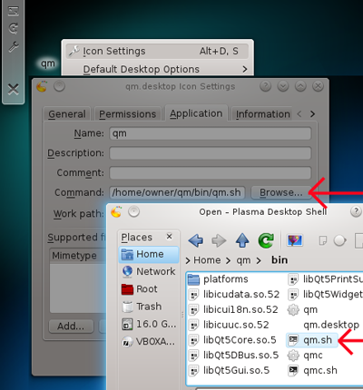
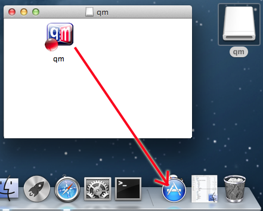

Model-Based Design Tool


The most recommended way of obtaining QM™ is by downloading the QP-bundle™, which includes QM™ and also all QP™ Real-Time Embedded Frameworks and the QTools™ collection. The main advantage of obtaining QM™ bundled together like that is that you get all components, tools and ready-to-use examples.
Go to the QM™ release page on GitHub, and choose the QM™ version number you wish to download. You should select the latest QM™ version, unless you have a very specific reason to go with an older release.
Inside the release directory (e.g., 4.6.0), you need to choose the QM™ archive for you platform. QM™ is available for Windows (qm_<ver>-win32.zip), Linux (qm_<ver>-linux64.zip), and MacOS (qm_<ver>-macx64.dmg).

Go to the QM™ download page on SourceForge, and choose the QM™ version number you wish to download. You should select the latest QM™ version, unless you have a very specific reason to go with an older release.
Inside the release directory (e.g., 4.6.0), you need to choose the QM™ archive for you platform. QM™ is available for Windows (qm_<ver>-win32.zip), Linux (qm_<ver>-linux64.zip), and MacOS (qm_<ver>-macx64.dmg).

After downloading the ZIP archive for Windows (qm_<ver>-win32.zip), you can unzip the archive into any directory, although the C:\qp\ folder is the recommended default.
"Program Files" or "Program Files (x86)", because these directories have access limitations and don't allow you to modify the QM Style Sheet (qm.qss) or new model templates.If you wish, after the installation, you could create a desktop shortcut and you can also associate QM™ model files (*.qm and *.qmp) with the QM application (using the standard Windows Explorer and "Open With" popup menu).
To uninstall QM™ you simply delete the installation directory.
After downloading the ZIP archive for Linux (qm_<ver>-linux64.zip), you can unzip the archive into any directory, although the ~/qp/ folder is the recommended default.
The easiest way to launch QM™ is through the desktop shortcut. However, on some Linux desktops the provided QM setup program might not be able to install correctly. In most of such cases, you might still be able to create the desktop shortcut manually. The provided procedure should work for both KDE and GNOME desktops:
<qm>\bin\qm.desktop from the file explorer to the desktop:
<qm>\bin\qm.sh script
<qm>\Resources\ folder:
<qm>/bin/qm.sh bash script instead of the <qm>/bin/qm executable directly.After downloading the qm_<ver>-macx64.dmg disk image, double click on the .dmg file. This will mount and open the disk image. To install the QM tool, you simply drag the qm.app image into the Applications folder (typically visible in the Dock). If you wish, you might also create the alias of the qm.app and place it on your Desktop.

To uninstall QM, simply delete the QM application from the Applications folder.
The setup program installs QM™ executable and all shared libraries necessary to run the application. The following example shows directories and files installed on Windows (<qm> denotes the folder, where you chose to install QM™):
If your only intention is to use QM™ as a drawing tool, you don't need to bother with QP™ or even know what it is. However, if you wish to use QM™ to its full potential for generating production-quality code, you need to install at least one of the QP™ frameworks (QP/C, QP/C++, or QP-nano). The open source QP™ frameworks are available for download inside the QP-bundle™, which includes QM™ and also all QP™ Real-Time Embedded Frameworks and the QTools™ collection or separately, as described in the Reference Manuals of each framework.
Next: Launching QM™